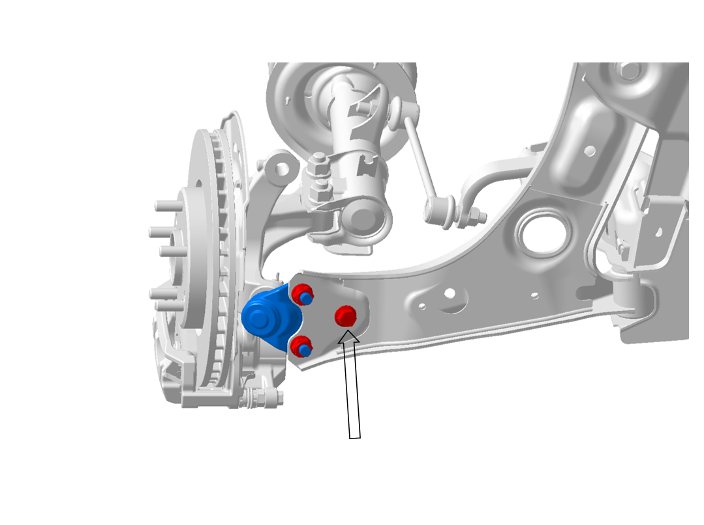
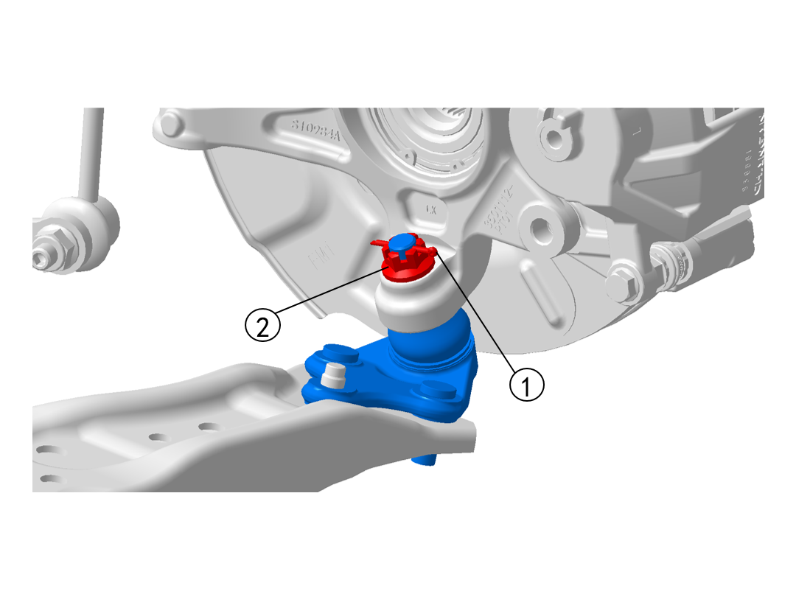
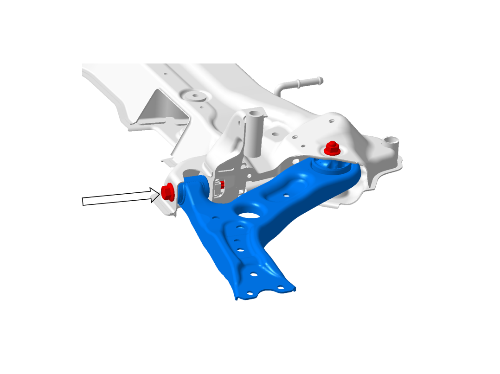
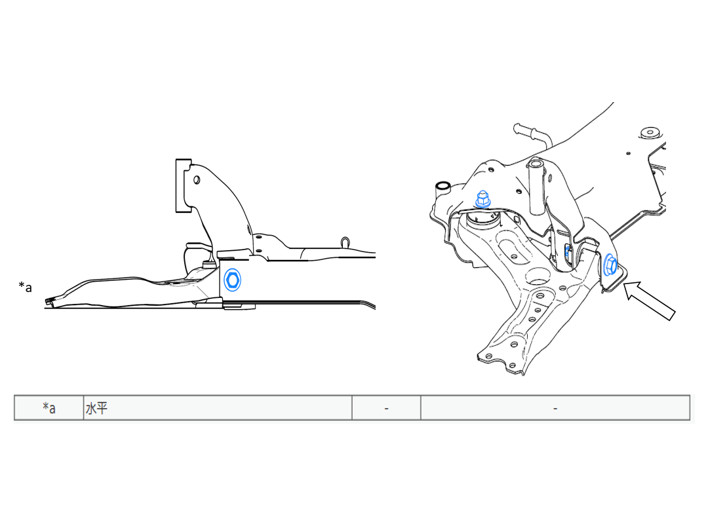
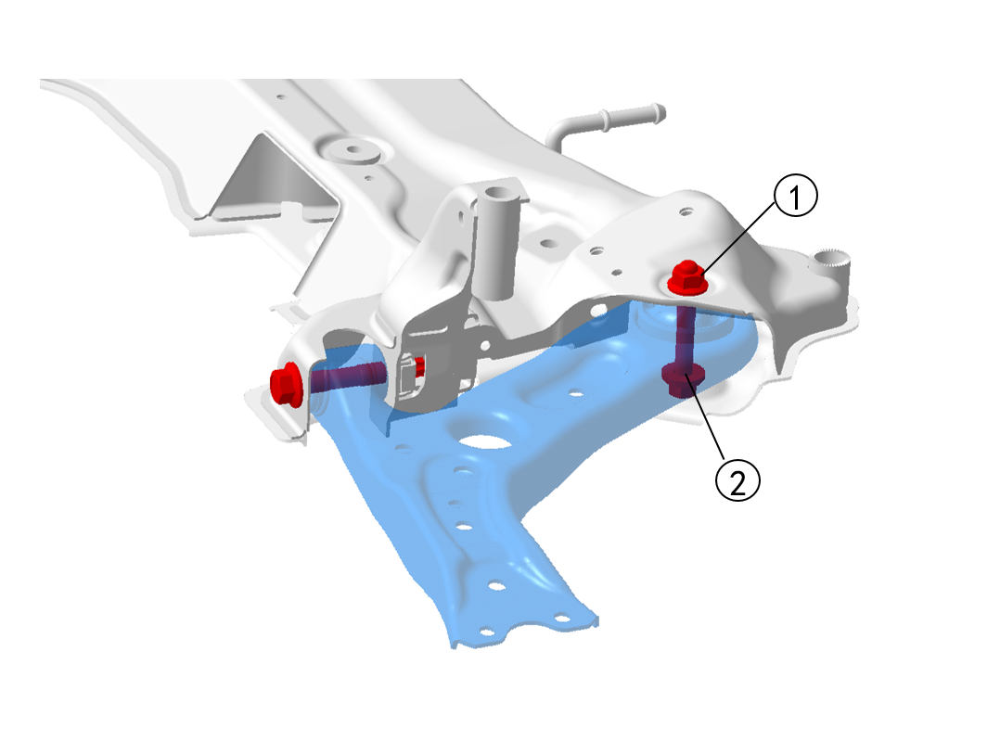

Снятие
Ослабить гайки колес, выполнить Подъем автомобиля, снять переднее колесо. Ссылка: Подъем, Колеса и шины
Выполнить Снятие болта крепления переднего рычага к пальцу шаровой опоры переднего рычага, момент затяжки: 120 ± 10 N.m.

Выполнить Снятие гаек крепления переднего рычага к пальцу шаровой опоры переднего рычага (2 шт.), момент затяжки: 90 ± 5 N.m.
Выполнить Снятие шплинта 1 и гайки 2 соединения пальца шаровой опоры переднего рычага с тормозным механизмом, момент затяжки: 130 ± 10 N.m.

Выполнить Снятие узла пальца шаровой опоры переднего рычага. Инструмент: Специальный инструмент для Снятие стопорной гайки шаровой опоры рулевой тяги
Выполнить Снятие болта крепления переднего рычага подвески в сборе к передней втулке переднего подрамника, момент затяжки: 250 ± 20 N.m.


Выполнить Снятие гайки и болта крепления переднего рычага подвески в сборе к задней втулке переднего подрамника, момент затяжки: 200 ± 20 N.m.

Приподнять стабилизатор, затем снять передний рычаг подвески в сборе.
Установка
Процесс Установка обратен порядку Снятие.
В процессе Установка необходимо обратить Внимание на то, чтобы все болты при затяжке затягивались с требуемым моментом.
При Установка переднего тормоза и пальца шаровой опоры переднего рычага соблюдайте осторожность, чтобы не порвать пыльник пальца шаровой опоры переднего рычага.
Для деталей с пыльниками после сборки необходимо проверить пыльник, наличие царапин и повреждений не допускается (визуальный осмотр).